Desarrollo Django
1. Recordemos
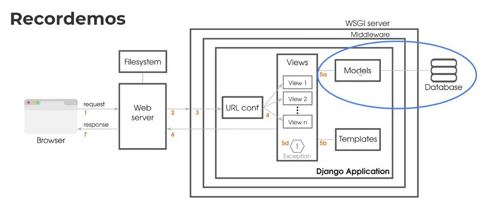
2. ¿Qué tipo de relaciones hay?
Django ofrece formas de definir los tres tipos más comunes de
relaciones de base de datos: muchos a uno, muchos a muchos y uno a
uno. En lo que respecta a las relaciones de uno a uno, no solo
podremos definirlas como una relación, sino también utilizando la
técnica de herencia
El Orm transforma las clases a tablas en la abase de datos.
3. Relaciones de muchos a uno
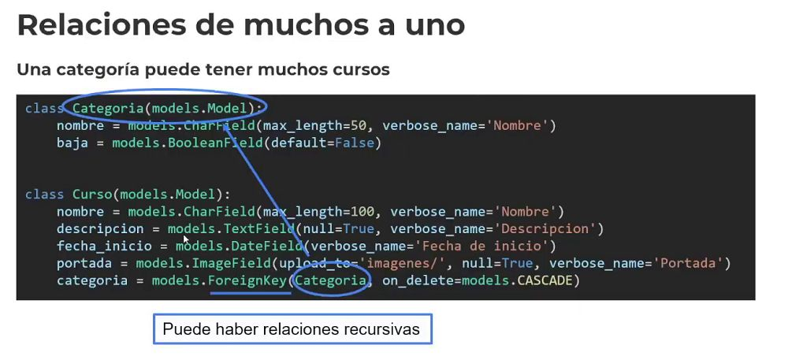
Una categoría puede tener muchos cursos
Por ende la clave foránea va en Curso.. El curso está relacionado con una Categoría.
on_delete.. Cuando se borra la categoría.. Con..
models.CASCADE -> Cuando se borra la categoría arrasta borrando todo los asociados de la base de Datos, usando DJango.
models.SET_NULL -> No la borra, solo deja en nula categoría.
# class Curso(models.Model):
# nombre = models.CharField(max_length=100, verbose_name='Nombre')
# # descripcion = models.TextField(null=True, verbose_name='Descripcion') * Los campos escritos de manera en singular.
# # fecha_inicio = models.DateField(verbose_name='Fecha de inicio')
# # portada = models.ImageField(upload_to='imagenes/', null=True, verbose_name='Portada')
# # categoria = models.ForeignKey(Categoria, on_delete=models.CASCADE) -> CASCADE
# # estudiantes = models.ManyToManyField(Estudiante)
# def __str__(self):
# return self.nombre
# class Estudiante(models.Model):
# nombre = models.CharField(max_length=100, verbose_name='Nombre')
# # apellido = models.CharField(max_length=150, verbose_name='Apellido')
# cursos = models.ManyToManyField(Curso)
# def __str__(self):
# return self.nombre
--------------------------------- Extra
* Que es el borrado logico?
- No es eliminado de la base de datos.. Pero le dejamos un flag, por ejemplo si ese elemnto necesita ser auditadto
* De esta manera cuando nos traemos los elementos, lo nos traremos los restore, ya que tienen el self.baja en False
def soft_delete(self):
self.baja = True -> No se elimina, más bien se "da de baja"
self.save()
def restore(self):
self.baja = False
self.save()
----------------------- Ejemplos
Con el siguiente comando vemos el comando sql que hará..
- python manage.py sqlmigrate cac 0001_initial -> Vemos que sql se ejecutará
- python manage.py migrate -> Creamos la migración
4. Relaciones de muchos a muchos
Un curso tiene muchos estudiantes y un estudiante puede estar en varios cursos
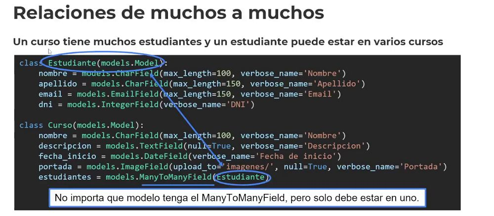
Creamos una tabla intermedio..
class Curso(models.model):
estudiantes = models.ManyToManyField(Estudiante) -> Solo debe ir en 1 de las 2 clases que estamos relacionando.. Resuelve lo de la tabla intermedia.
* Con Django Siempre escribimos clases..
class Curso(models.Model):
nombre = models.CharField(max_length=100, verbose_name='Nombre')
descripcion = models.TextField(null=True, verbose_name='Descripcion')
fecha_inicio = models.DateField(verbose_name='Fecha de inicio')
portada = models.ImageField(upload_to='imagenes/', null=True, verbose_name='Portada')
categoria = models.ForeignKey(Categoria, on_delete=models.CASCADE)
# estudiantes = models.ManyToManyField(Estudiante) -> O bien si tengo un curso, y vamos asociar a los estudiantes, lo hacemos desde acá..
- Dependerá de la manera en la cual armamos el sistema.
class Estudiante(models.Model):
nombre = models.CharField(max_length=100, verbose_name='Nombre')
apellido = models.CharField(max_length=150, verbose_name='Apellido')
cursos = models.ManyToManyField(Curso) -> De esta manera el estudiante, está asociado a muchos cursos
* Creamos una relación bidireccional de muchos a muchos con la clase definida..
Muchos estudiantes con muchos cursos y muchos cursos con muchos estudiantes.
De esta manera Django genera la tabla intermedia que sirve de puente entre curso y estudiante..
- python manage.py makemigrations ->
- python manage.py migrate -> Al hacer el migrate crearemos una tabla extra, que estará relacionada.
----------------------- Ejemplo Práctico para agregar datos
Entramos a la shell..
python manage.py shell_plus
curso_3 = Curso(nombre="Otro")
curso_3.save()
estudiante = Estudiante(nombre="Maat")
estudiante.save()
estudiante.cursos.add(curso_3) -> Creamos otra asociación.
-----------------------
Un curso tiene muchos estudiantes y un estudiante puede estar en varios cursos y
se desea registrar información sobre esa relación (la inscripción)
Generamos una clase intermedia, para guardar información extra..
- through='Inscripcion' -> Relacionamos para obtener la fecha de la Inscripcion
- fecha = models.DateField()
* De esta manera agregamos información extra a la relación..
Un estudiante es una persona
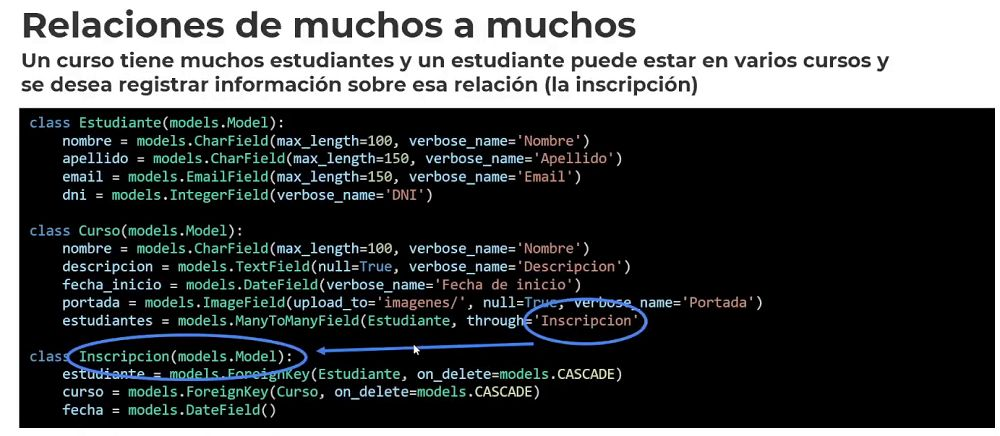
-OneToOneField.. El Estudiante con la Persona.
----------------------- Ejemplo
class Persona(models.Model):
nombre = models.CharField(max_length=100, verbose_name='Nombre')
apellido = models.CharField(max_length=150, verbose_name='Apellido')
class Estudiante(models.Model):
persona = models.OneToOneField(Persona, primary_key=True, on_delete=models.CASCADE) -> Uno a Uno
legajo = models.CharField(max_length=100, verbose_name='Legajo')
-----------------------
Entramos a la shell..
python manage.py shell_plus
5. Relaciones de uno a uno
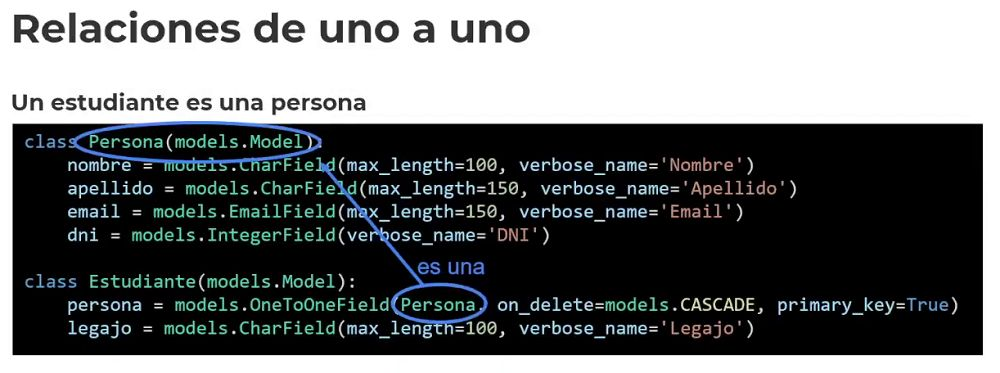
----------------------- Relaciones de uno a uno
Un estudiante es una persona
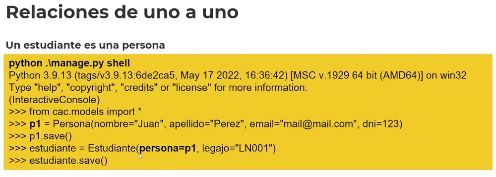
6. Relaciones de uno a uno (herencia)
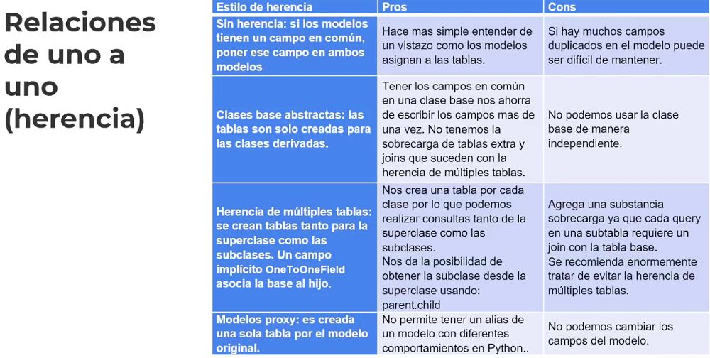
La Herencia la usamos desde Django, son maneras específicas.. Que usa Django.
7. Clase base abstracta
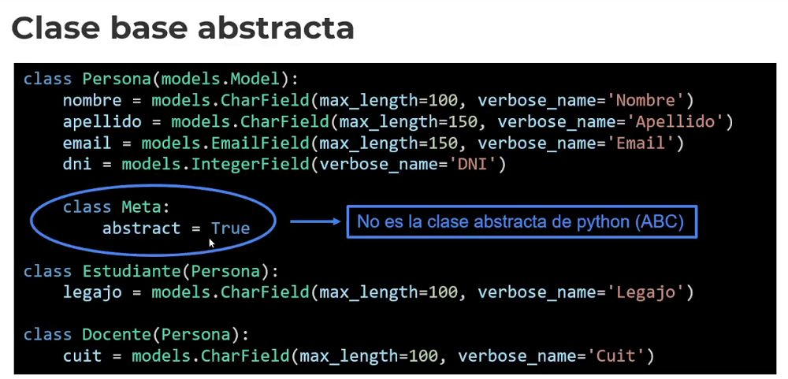
En este ejemplo, no existirá una Tabla Persona..
Tendremos Estudiante que usa a Persona.
Tendremos Docente que usa a Persona.
8. Herencia de múltiples tablas
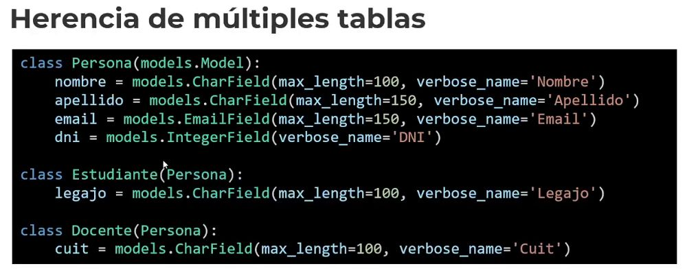
No muy recomendad, ya que al traer datos, se hace más pesado.
La que acostumbramos a ver pero menos perfomante.
* Más registros, más lento..
9. Modelos proxy
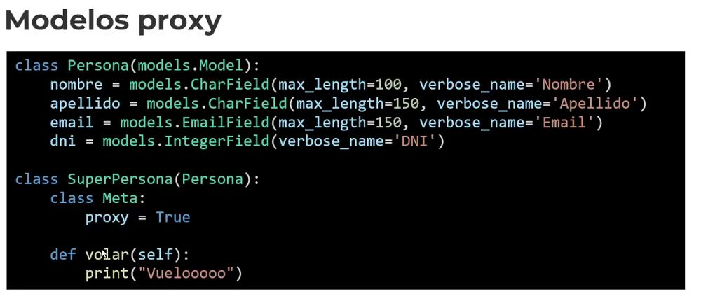
El proxy le agrega responsabilidad a la clase pero no es persistida..
- Puede ser usada..
Digamos que le agrega más detalles a la clase base.
* Usar herencia solo cuando sea necesario..
Generalmente se usa la Clase Abstracta, para tener poca herencia.
Dependerá del proyecto.
10. ¿Cómo interactúo con la BD?
Django brinda automáticamente una API de abstracción de base de
datos que permite crear, recuperar, actualizar y eliminar objetos. Para
la recuperación de objetos de la base de datos, se utiliza un QuerySet
vía un Manager de la clase de Modelo. Un QuerySet representa una
colección de objetos de la base de datos.
Todos los modelos, tienen un manager.. El Orm maneja la data de la base de datos.
11. CRUD objetos
Crear Actualizar Eliminar.. A través del ORM
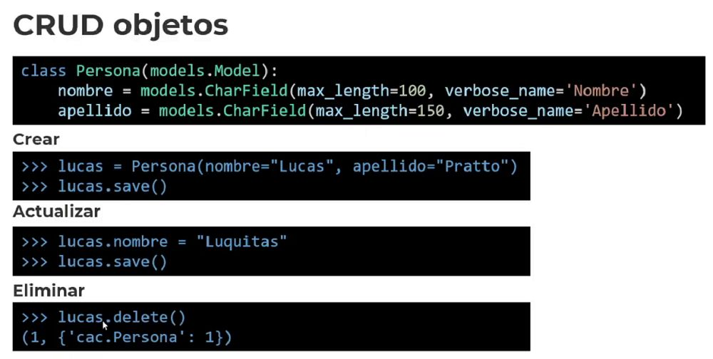
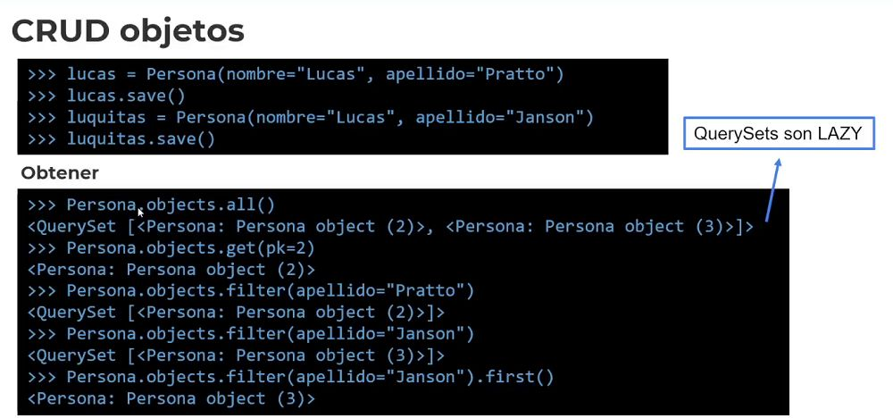
Obtener
Persona.objects.all() // Con el .objects manager asociado al modelo, que pone el ORM encargado de interactuar con la Base de Datos.
Persona.objects.filter() Son todos métodos del ORM para manejar